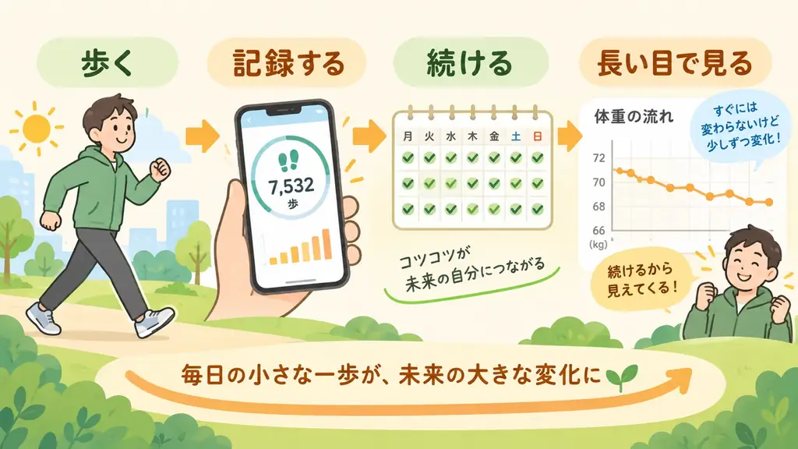

歩数と体重
歩数と体重はどう関係する？
公開日: 2026年9月22日
「今日はたくさん歩いたのに、体重が減っていない。」そんな経験はありませんか？ 歩く量が増えれば、一般には身体活動による消費エネルギーも増えます。 けれど、今日たくさん歩いたからといって、明日の体重がその分だけ下がるわけではありません。
では、歩数を記録することにはどんな意味があるのでしょうか。 答えは、1日だけを見るのではなく、毎日の積み重ねを見えるようにすることにあります。

先に要点
- 歩く量が増えると、一般には消費エネルギーも増えます。
- ただし、体重はその日の歩数だけでは決まりません。
- 大切なのは1日の結果より、無理なく続けて、歩数と体重の流れを見ることです。
歩いたからといって、翌日に体重が減るとは限らない
歩行は身体活動のひとつです。厚生労働省の情報でも、身体活動によるエネルギー消費量は、 体格、活動の強さ、活動時間などによって変わると説明されています。 そのため、同じ10,000歩でも、すべての人が同じエネルギーを使うわけではありません。
さらに、体重には食事からとるエネルギー、歩行以外の活動、体格など、さまざまな要素が関わります。 つまり、「今日はたくさん歩いた」＝「明日は必ず体重が減る」という単純な関係ではありません。
それでも、歩数を見る意味は大きい
「では、歩数を記録しても意味がないのでは？」と思うかもしれません。むしろ逆です。 歩数の良いところは、日々の活動量を継続して見やすいことです。
体重がすぐには動かなくても、「最近あまり歩けていない」「先週より歩く日が増えた」 「いつもの生活より少し多く歩く状態が続いている」といった変化は、歩数なら確認しやすくなります。 歩数は「結果が出たか」だけでなく、その前にある毎日の行動が続いているかを見る数字として使いやすいのです。
大きく変えることより、続けられること
体重管理を考えると、「もっと運動しないと」「毎日10,000歩歩かないと」と考えがちです。 でも、最初から大きな目標を立てても、続かなければ毎日の積み重ねにはなりません。
昨日より少し歩く。
それをできる日が少しずつ増える。
そして、その記録が残っていく。
何歩が正解かは、人によって違います。 まずは自分が普段どのくらい歩いているのかを知り、続けられる範囲で歩くこと。 その変化を記録していくことが、長い目で見るための出発点になります。
毎日記録すると「自分のいつも」が分かる
1日だけの5,000歩には、それほど多くの情報はありません。 でも、何日も記録が続くと、「普段はこのくらい歩いている」「休日は少なくなりやすい」 「最近は以前より多く歩く日が続いている」といった、自分なりの基準が見えてきます。
この「自分のいつも」が分かると、その後の変化も見つけやすくなります。 毎日の歩数を記録する意味は、数字を集めることそのものではありません。 続けた記録から、自分の生活の変化を見つけられることにあります。
体重も、1日ではなく流れで見る
体重についても同じです。体重は水分や食事などの影響で、1日単位では上下します。 そのため、昨日と今日だけを比べても、長い目で見た変化が分かりにくいことがあります。
歩数だけでなく体重も記録すると、「歩く量の変化」と「体重の流れ」を一緒に振り返れるようになります。 1日ごとの体重ではなく、少し長い期間で見る理由は 「体重はなぜ7日平均で見るの？」で詳しく説明しています。
歩数と体重は「毎日の記録」でつながる
歩数を増やしたからといって、すぐに体重が変わるとは限りません。 だからこそ、今日の結果だけを見るのではなく、 歩く → 記録する → 続ける → 振り返るという流れが大切になります。
数日では分からなかった変化も、記録が積み重なると見えてくることがあります。 体重だけを見て一喜一憂するより、「最近、ちゃんと歩けているか」 「前より少し続けられるようになったか」を見ることも、毎日の健康管理では大事な情報です。
まいにちウォークが目指していること
まいにちウォークは、毎日の歩数を確認するところから始められる歩数計アプリです。 まずは今日の歩数を見る。それが毎日積み重なる。必要なら体重も記録して、 歩数と体重の流れを同じアプリで振り返れます。
さらに記録がそろえば、このままの状態を続けた場合の体重の見通しや、 歩数を変えた場合の計算上の変化も確認できます。 これは将来の体重を保証するものではなく、一定の条件を置いて考えるための見通しです。
大きなことを一度だけするためではなく、毎日少しずつ続けるために使うこと。 それが、まいにちウォークの基本的な考え方です。
今日の歩数から始める
最初から体重を記録する必要はありません。まずは今日どのくらい歩いたのかを見るところから始められます。 歩く。記録する。続ける。 まいにちウォークは、その毎日の積み重ねを振り返るためのアプリです。
App Storeで見る関連記事
参考にした公的情報
- 厚生労働省 健康日本21アクション支援システム 「身体活動とエネルギー代謝」
- 厚生労働省 健康日本21アクション支援システム 「活動量の評価法」
- 米国国立糖尿病・消化器・腎疾病研究所（NIDDK） Research Behind the Body Weight Planner
本記事は一般的な情報提供を目的としたもので、医療上の診断や治療を目的とするものではありません。 体重管理について個別の健康上の懸念がある場合は、医療専門職へご相談ください。